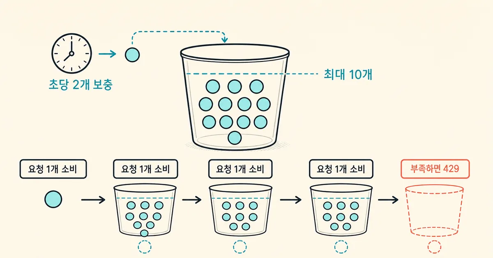
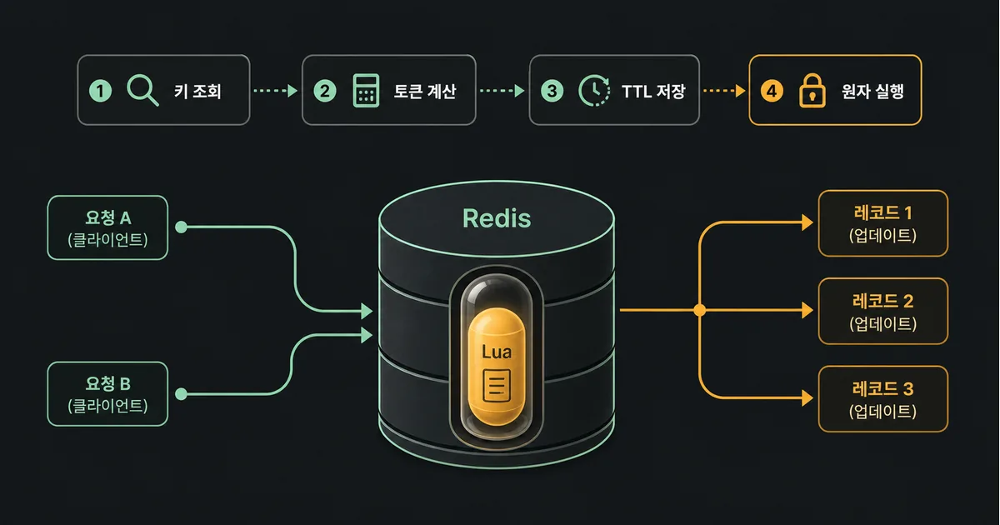
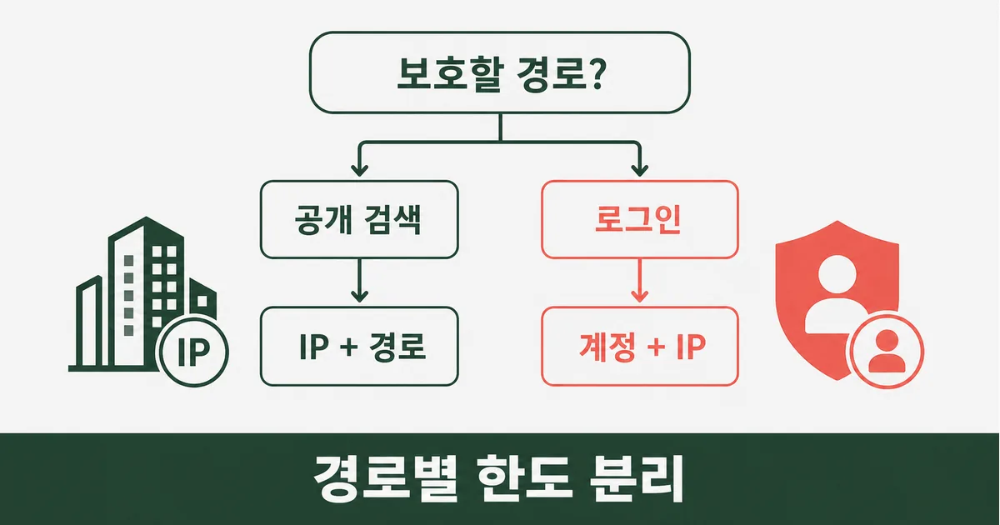

로그인 API가 평소보다 많이 호출된다고 해서 모두 공격은 아니다. 모바일 앱의 재시도, 잘못된 배치 작업, 한 사용자의 빠른 클릭도 같은 증상으로 보인다. 그러나 제한이 없으면 인증 서비스와 데이터베이스가 먼저 지치고, 정상 사용자의 요청까지 실패한다. 이 글은 Redis와 토큰 버킷으로 요청을 어디서 세고, 어떤 키로 묶고, HTTP 429 응답을 어떻게 돌려줄지 실제 API 경로 기준으로 설명한다.
개발 가이드
최신 기준 · Redis·IETF·Cloudflare 공식 자료 및 공개 블로그 교차 확인 · 2026. 7. 29
Redis 토큰 버킷으로 과도한 API 호출을 제어하는 실전 설계
토큰 버킷은 짧은 정상 버스트는 허용하면서 평균 호출량을 제한한다. Redis의 Lua 스크립트로 토큰과 시간을 원자적으로 갱신하고, 429와 RateLimit 헤더로 클라이언트에게 재시도 시점을 알린다.
1. 레이트 리밋은 ‘공격 차단’보다 자원 예산을 지키는 장치다
레이트 리밋(rate limit)은 일정한 식별자에 허용할 요청량을 정하는 일이다. 목적은 봇을 막는 데만 있지 않다. 느린 외부 결제 API, CPU를 많이 쓰는 검색, 비밀번호 검증처럼 비용이 큰 경로에 예산을 주면 한 클라이언트의 오류가 전체 장애로 번지는 것을 줄일 수 있다. 반대로 모든 API에 같은 숫자를 씌우면 이미지 로딩처럼 많은 정상 요청과 로그인 시도처럼 위험한 요청을 같은 방식으로 다루게 된다.
먼저 ‘누구의 어떤 경로를 보호할지’를 문장으로 적는다. 예를 들어 공개 검색은 IP와 경로를 기준으로 분당 한도를 둘 수 있고, 로그인은 계정과 IP를 함께 보아야 계정 대입 공격과 공유 IP의 오차를 모두 완화할 수 있다. API 키가 있다면 키별 계약 한도를 별도로 둔다. 인증 전에는 계정 문자열 자체도 개인정보·열거 공격의 단서가 될 수 있으므로 로그와 Redis 키에 원문을 장기간 남기지 않는 원칙도 필요하다.

2. 고정 윈도우보다 토큰 버킷이 맞는 경우를 고른다
| 방식 | 좋은 점 | 주의할 점 | 주로 맞는 경로 |
|---|---|---|---|
| 고정 윈도우 | 구현과 설명이 단순하다 | 경계 직전·직후에 요청이 몰릴 수 있다 | 낮은 위험의 내부 API |
| 슬라이딩 윈도우 | 최근 호출 수를 더 고르게 본다 | 저장·계산 비용이 커질 수 있다 | 정확한 분당 정책 |
| 토큰 버킷 | 짧은 버스트를 허용하고 평균을 제한한다 | 용량과 보충률을 함께 정해야 한다 | 로그인·검색·공개 API |
| 동시성 제한 | 느린 작업이 점유하는 수를 직접 제한한다 | 요청률만으로는 해결되지 않는다 | 파일 변환·외부 호출 |
토큰 버킷에는 최대 토큰 수(capacity)와 초당 보충률(refill rate)이 있다. 용량 10, 초당 2개라면 처음에는 최대 10개까지 바로 처리할 수 있고, 이후 평균적으로 초당 2개가 회복된다. 요청 비용을 1개로 두면 남은 토큰이 1개 이상일 때만 통과시킨다. 비싼 엔드포인트는 요청 하나의 비용을 더 크게 둘 수 있지만, 먼저 경로를 분리하는 편이 운영에서 이해하기 쉽다.
- 제한값은 ‘평균 트래픽의 배수’ 같은 추상값보다 실제 경로의 정상 피크와 처리 비용에서 시작한다.
- 사용자·IP·API 키·경로 중 무엇을 키에 넣었는지 응답과 운영 문서에서 명시한다.
- 로그인 제한은 계정 단독 키와 IP 단독 키를 조합해 한쪽 우회를 줄이고, 성공 로그인 뒤에는 별도 정책을 적용한다.
3. 요청은 게이트웨이에서 키를 만들고 Redis에서 한 번에 판정한다
요청이 들어오면 애플리케이션 또는 API 게이트웨이는 신뢰할 수 있는 프록시가 전달한 클라이언트 주소, 인증된 사용자 ID나 API 키 ID, 정규화한 경로를 이용해 제한 키를 만든다. 그 다음 Redis에서 마지막 갱신 시각과 남은 토큰을 읽고, 경과 시간만큼 보충한 뒤, 통과라면 토큰을 차감하고 새 상태와 TTL을 저장한다. TTL은 한동안 호출되지 않은 키가 Redis에 계속 남지 않게 한다.

GET, 계산, SET을 애플리케이션에서 각각 호출하면 두 요청이 같은 잔여 토큰을 읽는 경쟁 상태가 생긴다. Redis Lua 스크립트는 스크립트 실행 중 명령을 원자적으로 처리하므로 이 작은 읽기-계산-쓰기 묶음에 적합하다. 다만 Lua가 긴 반복이나 큰 키 순회를 하면 Redis 자체를 멈출 수 있다. 스크립트는 한 버킷 키만 다루고, 시간·용량·비용을 숫자로 검증하며, 배포 시 SHA 캐시 누락에 대비해 EVALSHA 실패 처리도 준비한다.
-- KEYS[1]: rate:{login}:user-ip, ARGV: now_ms, capacity, refill_per_sec
local now = tonumber(ARGV[1])
local cap = tonumber(ARGV[2])
local rate = tonumber(ARGV[3])
local state = redis.call('HMGET', KEYS[1], 'tokens', 'updated')
local tokens = tonumber(state[1]) or cap
local updated = tonumber(state[2]) or now
tokens = math.min(cap, tokens + (now - updated) / 1000 * rate)
if tokens < 1 then return {0, math.floor(tokens)} end
tokens = tokens - 1
redis.call('HMSET', KEYS[1], 'tokens', tokens, 'updated', now)
redis.call('EXPIRE', KEYS[1], math.ceil(cap / rate * 2))
return {1, math.floor(tokens)}4. HTTP 429는 클라이언트가 재시도할 수 있게 답한다
한도를 넘겼다고 연결을 끊기기보다 HTTP 429 Too Many Requests를 반환한다. RFC 6585는 429 응답에 재시도 시간을 알려 주는 Retry-After 헤더를 넣을 수 있다고 정의한다. RFC 9448의 RateLimit 필드는 남은 할당량과 재설정 정보를 전달하는 표준 필드다. 헤더를 준다고 해서 악성 클라이언트가 반드시 따르는 것은 아니지만, 정상 SDK와 프런트엔드는 지수 백오프와 함께 예측 가능하게 동작할 수 있다.
| 항목 | 예시 | 의미 |
|---|---|---|
| 상태 | 429 Too Many Requests | 현재 요청을 처리하지 않았음을 표현 |
| Retry-After | 30 | 최소 대기 시간을 초 단위로 안내 |
| RateLimit | limit=10, remaining=0, reset=5 | 현재 정책과 재설정 정보를 전달 |
| 본문 코드 | RATE_LIMITED | 클라이언트가 문구 대신 안정적으로 분기 |

5. 제한 키는 IP 하나로 끝내지 말고 경로의 위험을 반영한다
IP 단독 키는 구현하기 쉽지만 회사, 학교, 이동통신사 NAT처럼 주소를 공유하는 사용자를 함께 막을 수 있다. 반대로 사용자 ID만 쓰면 로그인 전 요청이나 새 계정 대입 공격을 놓친다. 로그인에는 정규화한 계정 식별자의 해시와 IP 해시를 각각 제한하고, 검색에는 IP·경로, API 키 기반 서비스에는 키 ID·경로를 우선하는 식으로 분리한다. X-Forwarded-For는 신뢰하는 프록시가 덮어쓴 경우에만 사용한다. 인터넷에서 임의로 보낸 헤더를 그대로 믿으면 공격자가 키를 바꿔 제한을 피할 수 있다.
6. Redis 장애와 우회 경로를 먼저 결정한다
Redis가 느리거나 연결되지 않을 때 제한 기능도 실패한다. 로그인, 비밀번호 재설정, 결제처럼 위험이 큰 경로는 짧은 타임아웃 뒤 제한적으로 실패-닫힘(fail closed)을 선택할 수 있다. 일반 읽기 API를 Redis 장애 때문에 모두 막는 것이 더 큰 피해라면 실패-열림(fail open)을 택하되, 알림과 임시 보수 한도를 둔다. 이 선택은 보안팀과 서비스 운영자가 합의할 정책이지 코드의 기본값으로 숨길 일이 아니다.
- 허용·거절·Redis 오류를 경로와 키 종류별 카운터로 기록하되 원문 IP·계정은 마스킹하거나 해시한다.
- 429 비율, Redis 스크립트 지연, 키 수와 메모리를 대시보드에서 함께 본다.
- 프록시 체인, IPv6, 공유 IP, 인증 전·후 키 전환, 시간 역행을 통합 테스트에 넣는다.
- 관리자·헬스 체크·내부 작업자를 무조건 예외 처리하지 말고 별도 인증과 별도 한도를 둔다.
7. 한 경로에서 시작해 측정으로 제한값을 바꾼다
첫 적용 대상은 로그인 POST나 비밀번호 재설정처럼 실패 비용이 크고 호출 모양이 비교적 분명한 경로가 좋다. 먼저 관찰 모드로 키와 계산 결과를 기록해 정상 사용자가 어느 정도 버스트를 내는지 확인한다. 다음으로 낮지 않은 초기 한도와 429 응답을 켜고, 지원 채널의 오류 신고·429 비율·인증 성공률을 함께 본다. 마지막으로 부하 테스트에서 같은 키의 동시 요청, 서로 다른 키, Redis 타임아웃, 헤더 위조를 재현한다.
| 순서 | 확인할 질문 | 남길 증거 |
|---|---|---|
| 1. 범위 | 어느 경로와 자원을 보호하는가? | 경로별 키·한도 문서 |
| 2. 원자성 | 동시 요청이 토큰 하나를 두 번 쓰지 않는가? | Lua 통합 테스트 |
| 3. 응답 | 클라이언트가 언제 재시도할지 아는가? | 429·Retry-After 테스트 |
| 4. 장애 | Redis 오류 때 무엇을 허용·차단하는가? | 타임아웃·알림 정책 |
| 5. 조정 | 정상 사용자를 과하게 막지 않는가? | 429·성공률 대시보드 |
좋은 레이트 리밋은 ‘초당 몇 회’라는 숫자보다 제한이 걸린 뒤에도 서비스가 설명 가능하게 움직이는 상태다. 키의 구성, 버킷의 용량과 보충률, 429 계약, Redis 장애 정책을 한 문서와 테스트로 묶으면 다음 경로나 요금제에도 같은 판단을 재사용할 수 있다.
참고한 자료
레이트 리밋은 숫자 하나를 정해 차단하는 기능이 아니라, 보호할 자원과 신뢰할 식별자를 명확히 하는 운영 계약이다. 먼저 로그인이나 비밀번호 재설정처럼 비용과 위험이 큰 경로 하나에 토큰 버킷을 적용하고, 허용·거절·Redis 오류를 각각 관측하자. 제한값은 대시보드의 정상 트래픽과 429 비율을 보고 조정해야 한다. 이번 스프린트에는 로그인 POST에 계정과 IP 조합 키를 두고, Redis Lua 스크립트와 429 응답 테스트를 추가하자.